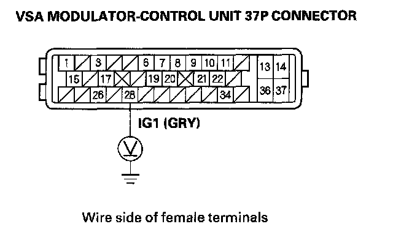
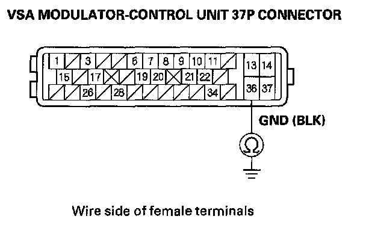

ABS Indicator or VSA Indicator Does Not Go Off, and No DTCs Are Stored
ABS indicator or VSA indicator does not go off, and no DTCs are stored1. Check for the communication between the vehicle and the HDS.
Is there the communication?
YES - Check for loose terminals in the gauge control module (tach) 36P connector. If necessary, substitute a known-good gauge control module (tach), then recheck. If it is OK, replace the original gauge control module (tach).
NO - If the HDS does not communicate with all the system of the vehicle, troubleshoot the DLC circuit. If the HDS does not communicate with only VSA, go to step 2.
2. Turn the ignition switch OFF.
3. Check the No. 4 (7.5 A) fuse in the under-dash fuse/relay box.
Is the fuse blown?
YES - Install the new No. 4 (7.5 A) fuse, and recheck. If the fuse continues to blow, check for short to body ground in the wire between the No. 4 (7.5 A) fuse in the under-dash fuse/relay box and the VSA modulator-control unit. If necessary, substitute a known-good VSA modulator-control unit, and retest.
NO - Reinstall the checked fuse, then go to step 4.
4. Disconnect the VSA modulator-control unit 37P connector.
5. Turn the ignition switch ON (II).
6. Measure voltage between VSA modulator-control unit 37P terminal No. 28 and body ground.

Is there battery voltage?
YES - Go to step 7.
NO - Repair open in the wire between the No. 4 (7.5 A) fuse in the under-dash fuse/relay box and the VSA modulator-control unit.
7. Turn the ignition switch OFF.
8. Check for continuity between VSA modulator control unit 37P terminal No. 36 and body ground.

Is there continuity?
YES - Check for loose terminals in the VSA modulator-control unit 37P connector, clean terminal G202 and recheck. If necessary, substitute a known-good VSA modulator-control unit, and retest.
NO - Repair open in the wire between the VSA modulator-control unit and body ground (G202).